|
|
|
|
Disueltos los talleres del TiT y afines, Raúl formó el grupo teatral Detritus con algunos titeanos, entre ellos Gallego, Daniel Napo, Norberto López, Miguel Magallanes, y otros nuevos actores (Irma Paso, Liza Szwarc, Alicia Sigal, Edith Berdini, Flavia Klc), cuyo primer montaje fue "Esperpentos", codirigido por Raúl y Rubén Gallego. Se montó primero en Los teatros de San Telmo y luego en el Centro Cultural Buenos Aires, en el marco del Primer encuentro de teatro experimental. En 1985 participó del montaje "La última cena" dirigido por Juan, presentado en "El Bancadero" (Asociación mutual de asistencia psicológica) y en una casona de la calle Julián Álvarez. En 1986 dirigió el montaje "Drácula" (basado en la novela de Bram Stocker) en el teatro Vitral. Luego ingresaron al grupo Ana Cinko y Graciela Clulow y entre 1986 y 1987 produjeron "Bazura" (experiencia callejera para el III Encuentro Latinoamericano de la Red de Alternativas a la Psiquiatría; estrenada en la explanada del Centro Cultural Gral. San Martin, se continuó con las funciones los sábados de marzo y abril en Carlos Pellegrini y Lavalle, y posteriormente en diversos lugares de la provincia de Buenos Aires) y "El monje" (según M. Lewis - L. Buñuel - J. C. Carriere; hecho teatral clandestino realizado en las instalaciones de la marroquinería López Creaciones, al que solo se podía asistir con invitación previa), ambos con dirección de Raúl. Fotos de "El monje" (1987) 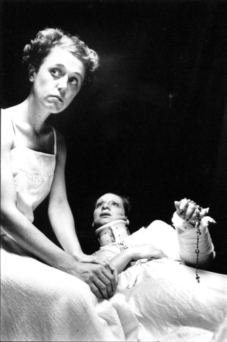 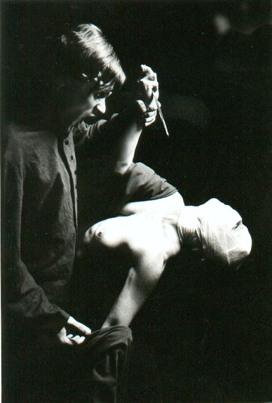 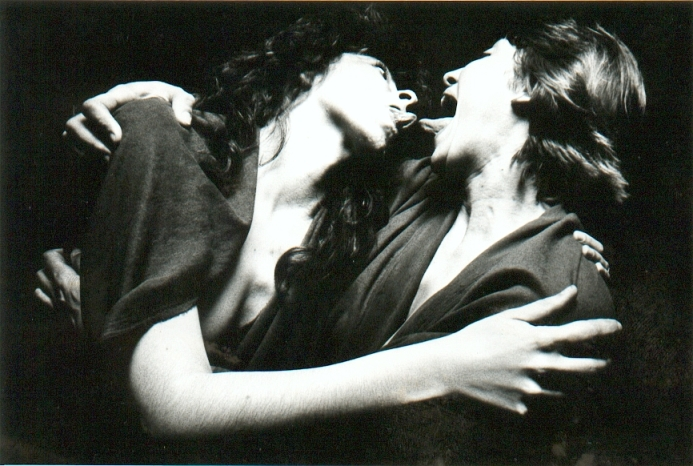
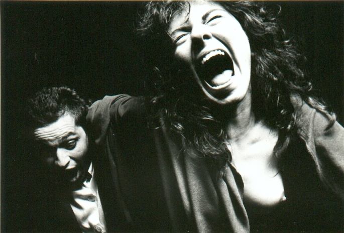 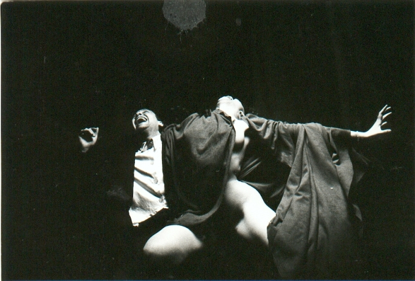 Otros trabajos de la era Detritus
Fotos de "Morfina"
Fotos de "Ilusiones de Masa y Poder" 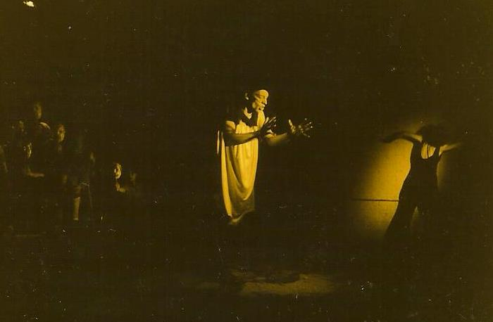 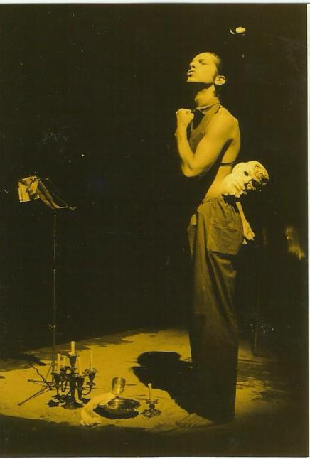 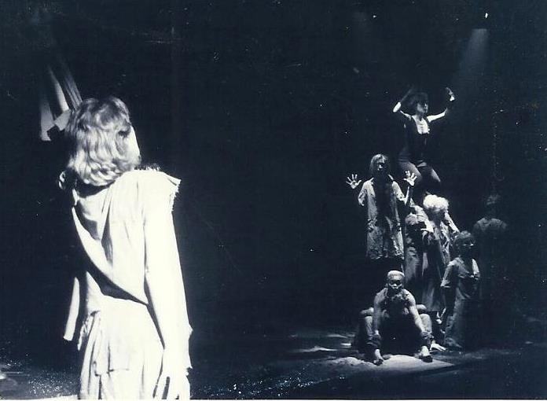 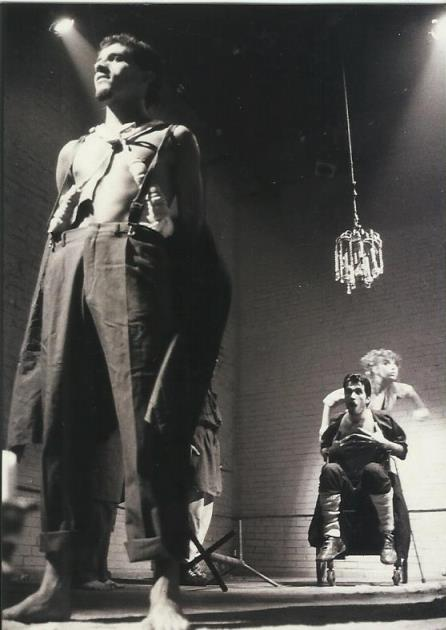 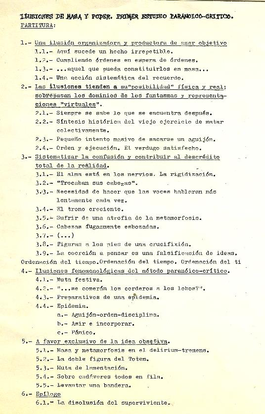 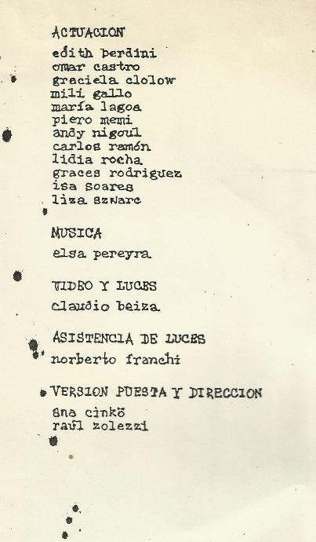
Luego de un interregno de estudio e investigación y viajes al exterior, en el 2000 Raúl y Ana Cinko forman el SIT (Seminario de investigación teatral) en La fábrica ciudad cultural del IMPA (Industrias Metalúrgicas y Plásticas Argentinas; es una empresa que cerró y fue recuperada y autogestionada por sus trabajadores en forma de cooperativa, en cuyo interior funciona un centro cultural). En 2002 deciden renombrar el grupo con el nombre TiT, y en todo ese período codirigieron varios montajes: "La silla mágica" (versión de "La almohada mágica" de Yukio Mishima; en 2000 en IMPA)
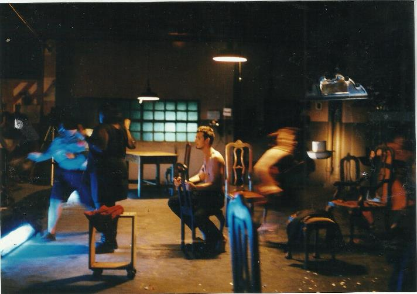 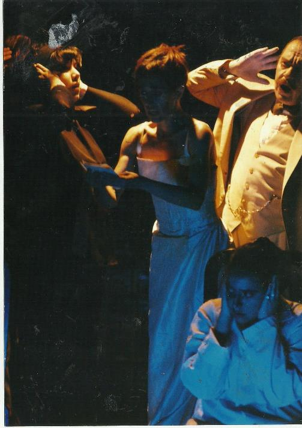 "El montón" (2001/2002 en IMPA y 2003 en C. C. de la Cooperación) 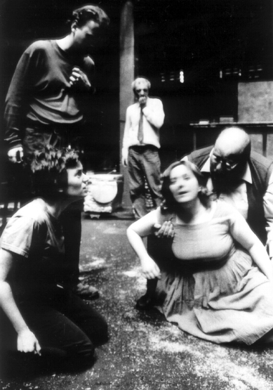 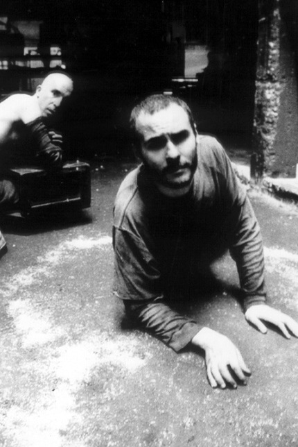 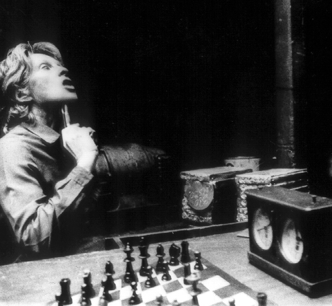 "El king (Pieza en seis actos, una demolición y sin brazos)" (2004 en C. C. de la Cooperación y 2005 en Teatro del Artefacto) 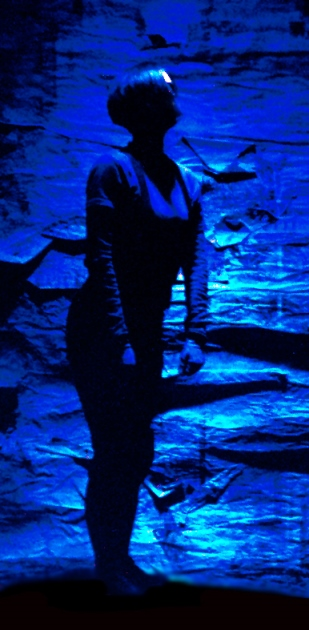 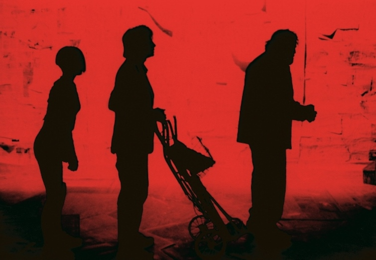 "El martillo sin amo (Mecanismo teatral para obtener un resultado automático)" (de Guillermo Piro; 2004 en El Astrolabio Teatro y 2005/2006 en Teatro del Artefacto) 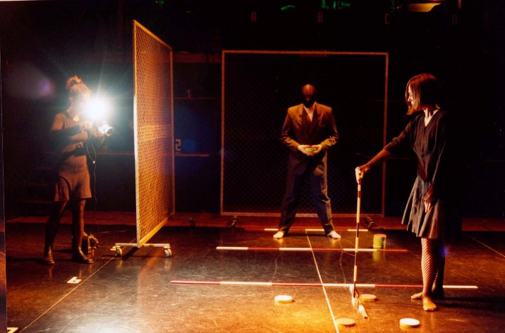 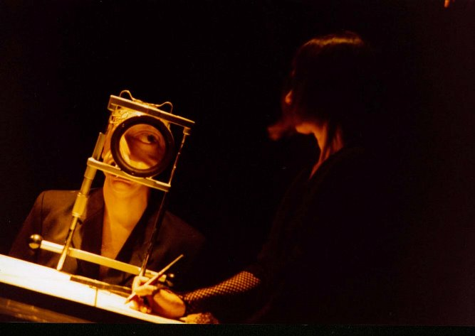 "La puerta la vieja la ciega la muerta" (2006/2007 en Teatro del Artefacto)
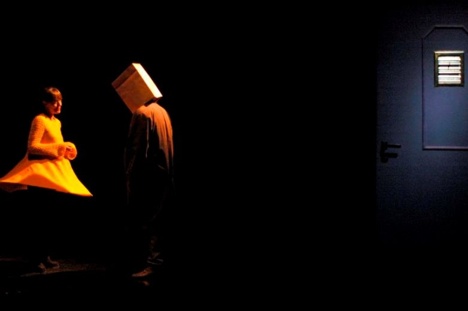 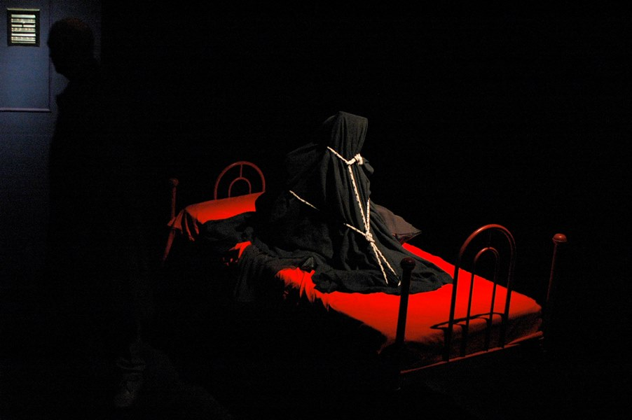 "Los invertebrales" (de Oliverio Coelho; 2010 en Chilavert Recupera -una imprenta recuperada por los trabajadores- y 2012 en la sala Hasta Trilce).
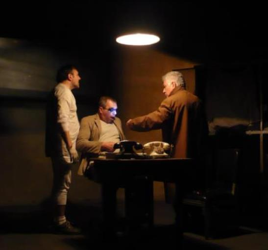 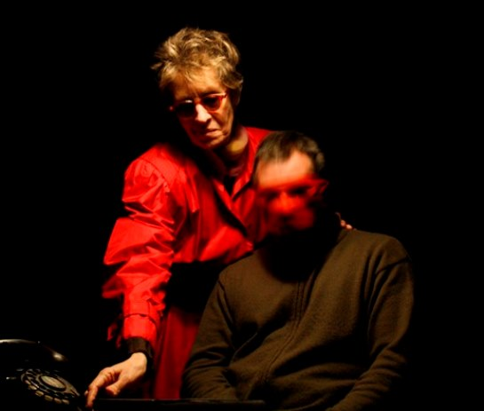 "La noche del Grand Guignol" (integrado por 3 piezas breves: "El beso", "La viuda" y "Semilla de maldad"; 2014 en la sala Hasta Trilce). "Compañía" (de Beckett; agosto de 2017 en la sala Hasta Trilce). 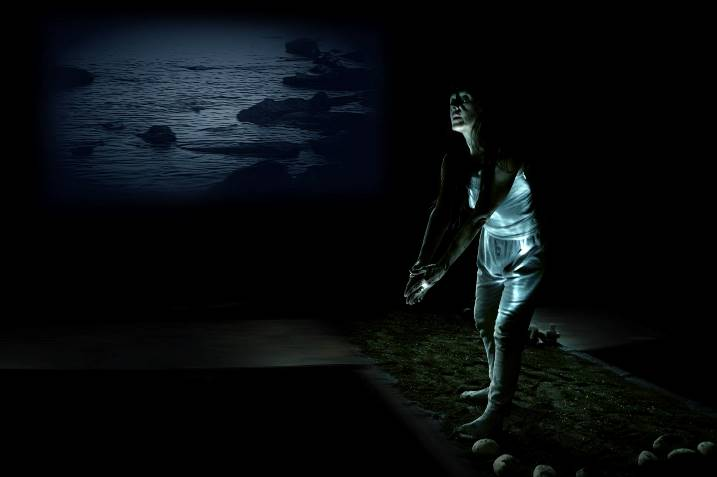 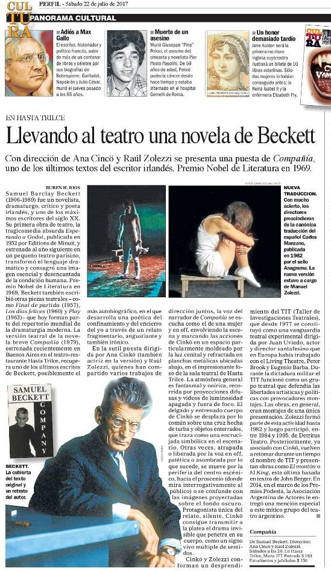 Link al artículo de Perfil en la web
|